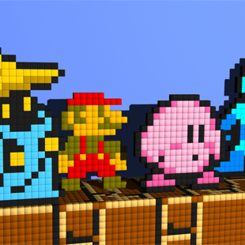

id Software's History Parallels the Seven Ages of Man and the History of PC Gaming
Ben Yatzhee Croshaw
23 August 2016 6:00 pm
So in the end credits of ZP last week I made a throwaway comment to the effect that Id Software's game release history can be looked upon as a representation of seven ages of Man. This was something that occurred to me as I was referring to Quake as the product of an angsty teenage goth metal phase of emotional development. Not in any of the individual creators, you understand; a group working together often form a kind of rudimentary gestalt personality, which I think is what you can see in Id back in the day.
As one of the great pioneers of gaming tech, the development of Id could also be viewed as the development of PC gaming as a whole. They were a maypole around which a lot of other games, companies and franchises danced, partly because there are still to this day popular engines that contain scraps of code from the original Quake. But let's stick to the games of Id itself while I explain how the seven ages of man are represented.
In the wilderness years prior to Wolfenstein 3D, Id Software developed a number of small, forgettable games like Hovertank 3D, Rescue Rover and Dangerous Dave, but their most lasting and memorable property from this time was undoubtedly Commander Keen, and I shouldn't have to explain where that belongs in the seven ages of man. You play a small boy saving the world from aliens, using a laser gun that knocks them out rather than killing them, displaying the moral innocence we like to think is characteristic of children, even though it blatantly isn't. Children are mean little bastards who will happily wage genocide on the insect community given half a chance and a magnifying glass.
Which brings us to the second age, represented by Wolfenstein 3D, the big-chinned Nazi-kill-em-up. This game I feel represents the golden years, that in-betweeny ideal period between childhood and adolescence, around the ages of 10-12. It's violent, yes, but against Nazis, which is about as morally virtuous as killing your fellow man can be. It also pays into boyish notions of square-jawed heroism straight out of a Captain America comic; big-bollocked righteous violence in the name of loyalty to the Allies and keeping our dear sweet mothers safe. There's even a bit where Hitler pilots a robot suit, for Christ's sake.
In contrast, the context for Doom's combat is a lot more abstract. The demons are too inhuman and distorted for us to grasp the motive behind their hostility. All we know from the bloody bodies that dangle from the ceiling is that the demons are being pointlessly cruel, and that effectively gives the player character carte blanche to be pointlessly cruel in response, for the sake of mindless cathartic slaughter. So in terms of ages of man, I place it in the early teens, as we are slowly becoming aware of the horrors of the world but are more fascinated in the horror for its own sake than in any deeper meaning.
Violent as Doom was, it's still somewhat upbeat. The characters are colourful and cartoonish and it's not above the odd bit of silliness, like the dead rabbit and the big cheesy smile on the space marine's face when you pick up a bigger gun. Most of that levity is gone from Quake, which as we discussed in the video, is the angst-riddled late teenage years, when we still don't fully understand the horrors of the world but make preposterous demands to be taken seriously regardless as we dress up in drab colours and listen to whatever music most efficiently annoys our parents because we're just so broody and miserable about Lovecraftian monsters trying to kill us with chainsaws.
And then all of a sudden Quake 2 takes all that frothing angst and resentment and cuts it off like a head of foam from an overflowing pint. The fantastical, otherworldly elements vanish, to be replaced by a brick and mortar science fiction scenario about humanoid cyborg aliens getting all up in our brown business for us to dutifully shoot back down. I can forgive a game for a lot of things, but never being boring, and Quake 2 is so dull and repetitive that it even makes Quake's brown castle showcase sparkle in comparison. It's cleaner and more washed out with none of the spike or edge. This age of man is early adulthood, the inevitable tedious entry-level job straight out of school where we first sacrifice a piece of our soul for the sake of security and stability and kick off years of self-loathing.
This stage inevitably leads to middle age, which inevitably leads to the midlife crisis, neatly embodied by Rage. All of a sudden the fear of death brings denial of one's past-it-ness and the need to try to fit in with the young people again. What do the young people like? Sandboxes! Mad Max-y, Borderlands-y post-apocalypse. And the cliche of the midlife crisis is buying a fast car. What does Rage introduce? Player-owned vehicles. Quod erat demonstrandum.
Now, I know what you're going to say. Yahtzee, surely you don't think the new Doom, Doom 2016, Doom 4, Deum, DOOOOM or whatever name ends up sticking, represents old age? That fast-paced, exciting young buck that re-energized the year's triple-A releases? Yes, and here's why. While a creaky old man couldn't move like DOOOOM does without reducing his hipbone to gravel, it's not just reduced physicality that characterises the old. If you've ever spent the holidays with elderly relatives and had to listen to their opinions on other races and alternative sexualities, then you'll agree that being old is all about no longer having to give a shit. And DOOOOM gives so little shit it would be swiftly fired from the fertilizer shop.
Back to articles